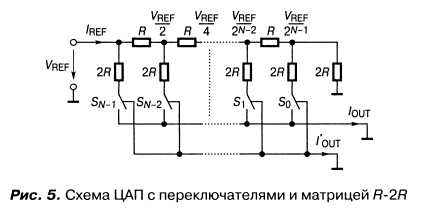

Недостатки ЦАП на базе взвешивающей матрицы сопротивлений
Достоинства ЦАП на базе взвешивающей матрицы сопротивлений
ЦАП на базе матрицы сопротивлений R-2R
В таком ЦАП используются резисторы только двух номиналов, а также специальные ключи, которые замыкаются только либо в левое положение, либо в правое

mkv35@mail.ru